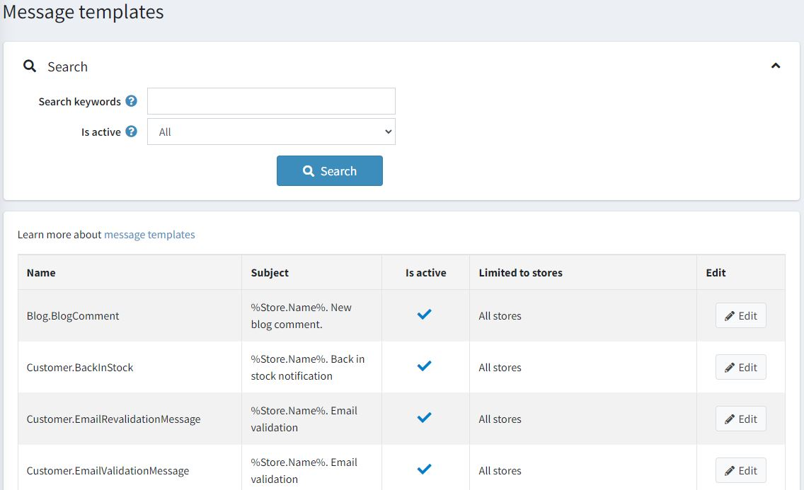
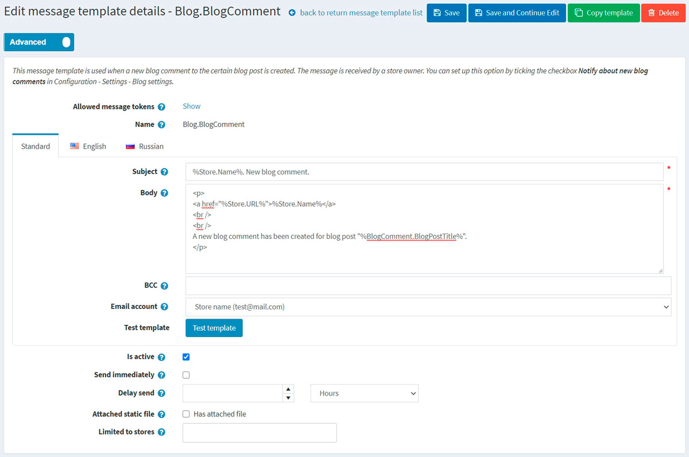

Message templates
Message templates define the layout, content, and formatting of automated messages sent from your store. They are called transactional emails because each one is associated with a specific type of transaction.
There are several message templates available in nopCommerce by default to notify users and the store owner about order statuses and more. To access message templates, go to Content management → Message templates.

Filtering:
You can search for message templates by keywords or store. Keywords are used to search in the name, body or subject of a message template. The list of available stores is shown if you have more than one store and the Performance → Ignore "limit per store" rules (sitewide) setting on the Catalog settings page is not active.
You can also filter message templates by "Is active".
Edit a message template
Find the message template you want to edit and click Edit. The Edit message template details window will be displayed as follows:

If you have more than one language installed, select the required language tab.
Tip
By default, only the English language is used in the system. You can manage languages in Configuration → Language. Read more about languages in nopCommerce in the Localization section.
Edit the message template details as follows:
- Edit the Subject of the message. You can include tokens in the subject. You can see the list with all the tokens allowed at the top of the page.
- Edit the Body of the message.
- In the BCC field, enter the blind copy recipients of this email message if needed.
- From the Email account dropdown list, select the email account used to send this message template.
- You can test this message template by clicking the Test template button. When clicked, the Send test email will be displayed as follows:
 Enter your email in the Send email to field, fill the tokens with some test values, then click the Send button.
Enter your email in the Send email to field, fill the tokens with some test values, then click the Send button.
Tip
Email accounts are configured in Configuration → Email accounts. Read more about it in the Emails accounts section.
- Select the Is active option to indicate this message should be sent.
- Select the Send immediately checkbox if you want this email to be sent immediately.
- If the previous checkbox is clear, the Delay send field will be displayed.
- Select the Attached static file checkbox to upload a file that will be attached to each email sent.
- Choose the stores in the Limited to stores field if the message template is for specific stores only. Leave the field empty in case this functionality is not required.
Note
In order to use this functionality, you have to disable the following setting: Catalog settings → Ignore "limit per store" rules (sitewide). Read more about multi-store functionality here.
Click Save.
Note
To create a full copy of the message template, click Copy template in the top right. This is useful if you have several stores configured and want to create distinct templates for each of your stores.